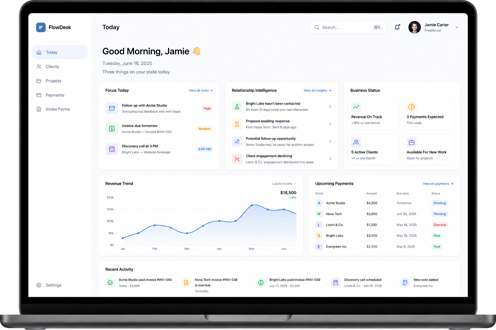
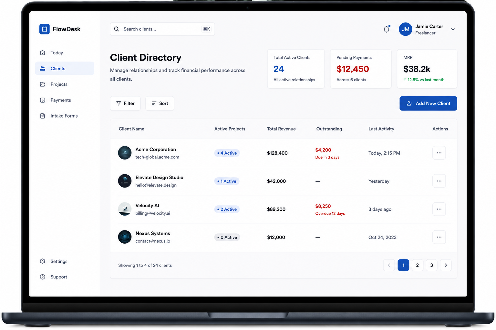
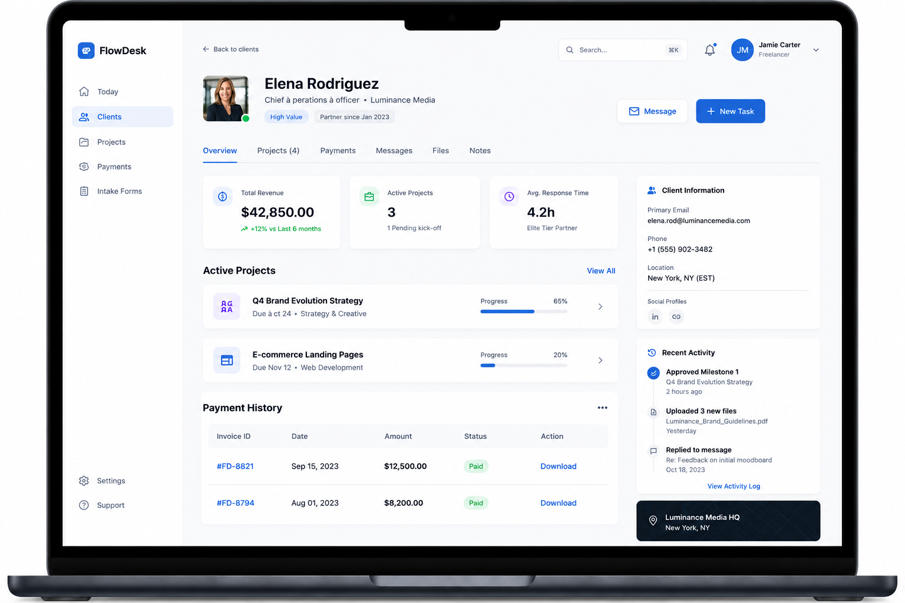
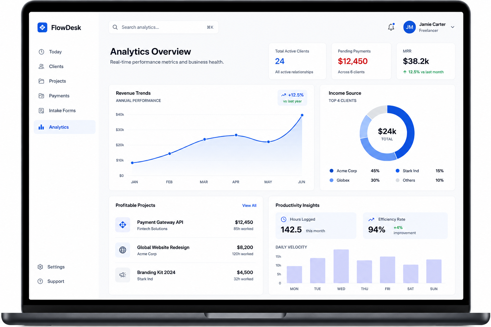

A concept exploring what happens when projects, clients, finances, and operations live in one connected system.
The productivity tools market is built on an assumption: better tools lead to better work. More features, smarter automations, tighter integrations. If a freelancer is struggling, they need a better tool.
But when I looked at how freelancers actually work, a different picture emerged. They weren't struggling because their tools were bad. They were struggling because their work lived in too many places at once.
Projects in Notion. Invoices in Wave or Excel. Clients in Gmail. Tasks in Todoist. Time in Toggl. Contracts in DocuSign. Analytics nowhere. Every tool works. Nothing connects.
The goal was not to design every screen, but to validate whether a unified operating system for freelancers could reduce tool fragmentation and create a clearer view of business health.
Prototype exploration. FlowDesk is a speculative product concept designed to explore how freelancers could manage projects, clients, finances, and operations from a single workspace. The workflows and feature set are still evolving.
Experience 01
Experience 01 — Unified Freelancer Dashboard
A single workspace bringing together tasks, client relationships,
payments, and business insights.

Experience 02 — Client Management
Track client relationships, project activity, revenue,
and outstanding payments from one place.

Experience 03 — Client Workspace
Every conversation, project, invoice, and document connected
to a single client profile.

Experience 04 — Business Intelligence
Real-time visibility into revenue, project profitability,
workload, and growth trends.